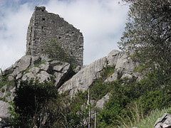
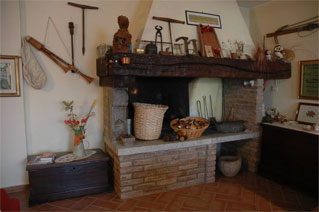
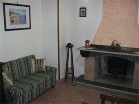
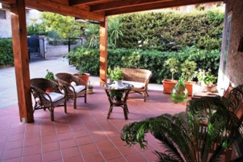
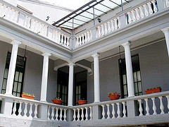

{% extends "base.html" %}
{% block title %}
Viaggiare nel Pollino in... Bed and Breakfas
{% endblock %}
{% block nav %}
Bed and BreakfastBed and Breakfast
{% endblock %}
{% block body %}

Bed and Breakfast
Una vacanza in un'area naturale protetta...
senza perdersi l'accogliente e tranquilla vita degli antichi scorci del centro storico.
Liberi di uscire la sera, di tornare tardi, di mangiare nel ristorante che preferite, di cucinarvi da soli.

Bed and Breakfast Al Vecchio Camino
A poche centinaia di metri dalla piazza principale di Rotonda.
Vai alla pagina di
Al Vecchio Camino per maggiori informazioni

Bed and Breakfast Luisella
Piccolo ma confortevole Bed & Breakfast nel centro storico di Rotonda.
Vai alla pagina di
Luisella per maggiori informazioni

Bed and Breakfast Pieffe
A Frascineto, nel versante sud del Parco Nazionale del Pollino a pochi Km dal Canyon del Raganello e dal Mar Jonio
Vai alla pagina di
B&B Pieffe per maggiori informazioni

Bed and Breakfast La Soffitta del Barone
A Mormanno tra Valle del Lao, L'orsomarso e il Pollino.
Vai alla pagina del
B&B La Soffitta del Barone per maggiori informazioni
{% endblock %}
{% block right %}
Escursioni e Visite Guidate
Per chi ama la montagna o vuole visitare il Parco in generale, pressola reception, disporrà di documentazione e materiali informativi.
Chi vuole percorrere l’ampia rete di sentieri del Pollino potrà usufruire dei servizi di una
Guida Ufficiale del Parco
{% endblock %}